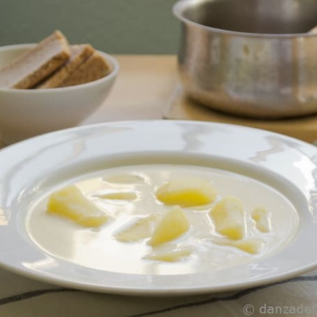

Gazpachuelo (con pescado)

Descripción
El gazpachuelo es una de las recetas más tradicionales de Málaga. Existen muchas versiones, todas con un magnífico sabor, suavidad y cremosidad.
El gazpachuelo malagueño tiene su origen entre los pescadores de la región. Elaboraban un caldo de pescado al que agregaban patata y daban sabor incorporando mayonesa.
Se le añade clara de huevo, pescado blanco, almejas, gambas... manteniendo el color blanco que tanto la caracteriza.
Ingredientes
- 1 k. aprox. de patatas
- 1,6 l. aprox. de agua + 200 ml. (para diluir la mayonesa)
- Aceite de oliva
- 2 huevos
- Limón
- Sal
- Una rosada (700gr - 1k ) cortada en trozos
- Gambas
Pasos
- En una cacerola ponemos el agua a hervir junto a las patatas cortadas en rodajas. Lo dejamos hirviendo a fuego medio hasta que las patatas estén cocidas.
- Mientras tanto separamos las claras de las yemas.
- Reservamos las claras.
- Con las yemas hacemos la mayonesa (a mano, batidora, thermomix…). Una vez tengamos la mayonesa, cogemos los 200 ml. de agua fría y poco a poco la vamos añadiendo a la mayonesa, mezclando de forma suave hasta conseguir que la mayonesa esté diluida. Reservamos.
- Una vez las patatas estén cocidas (10-12 minutos), añadimos la rosada, las gambas y la sal. Le dejamos que dé un hervor y comprobamos que la rosada se haya cocido.
- A continuación añadimos las claras de huevo, tapamos, retiramos del fuego y reservamos (con el calor de la olla se van cociendo las claras).
- Esperamos unos minutos que haya reducido el calor de la cacerola.
- Después añadimos la mayonesa diluida, esto hay que hacerlo poco a poco y sin mover para evitar que la mahonesa se corte. Dejamos sin mover hasta que pase un rato o se vaya a servir (cuidado que al añadir la mayonesa se puede cortar).
Gazpachuelo (sin pescado)
Descripción
El gazpachuelo es una de las recetas más tradicionales de Málaga. Existen muchas versiones, todas con un magnífico sabor, suavidad y cremosidad.
El gazpachuelo malagueño tiene su origen entre los pescadores de la región. Elaboraban un caldo de pescado al que agregaban patata y daban sabor incorporando mayonesa.
Se le añade clara de huevo, pescado blanco, almejas, gambas... manteniendo el color blanco que tanto la caracteriza.
Ingredientes
- 1 k. aprox. de patatas
- 1,6 l. aprox. de agua + 200 ml. (para diluir la mayonesa)
- Aceite de oliva
- 2 huevos
- Limón
- Sal
- (Opcional) Pan del día anterior (cortado en trozos)
Pasos
- En una cacerola ponemos el agua a hervir junto a las patatas cortadas en rodajas. Lo dejamos hirviendo a fuego medio hasta que las patatas estén cocidas.
- Mientras tanto separamos las claras de las yemas.
- Reservamos las claras.
- Con las yemas hacemos la mayonesa (a mano, batidora, thermomix…). Una vez tengamos la mayonesa, cogemos los 200 ml. de agua fría y poco a poco la vamos añadiendo a la mayonesa, mezclando de forma suave hasta conseguir que la mayonesa esté diluida. Reservamos.
- Una vez las patatas estén cocidas (10-12 minutos), añadimos las claras de huevo, después añadimos el pan y tapamos, retiramos del fuego y reservamos (con el calor de la olla se van cociendo las claras).
- Esperamos unos minutos que haya reducido el calor de la cacerola.
- Después añadimos la mayonesa diluida, esto hay que hacerlo poco a poco y sin mover para evitar que la mahonesa se corte. Dejamos sin mover hasta que pase un rato o se vaya a servir (cuidado que al añadir la mayonesa se puede cortar).